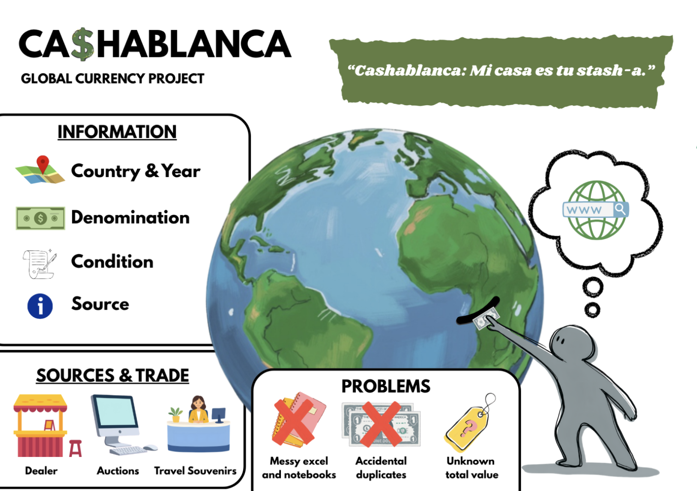
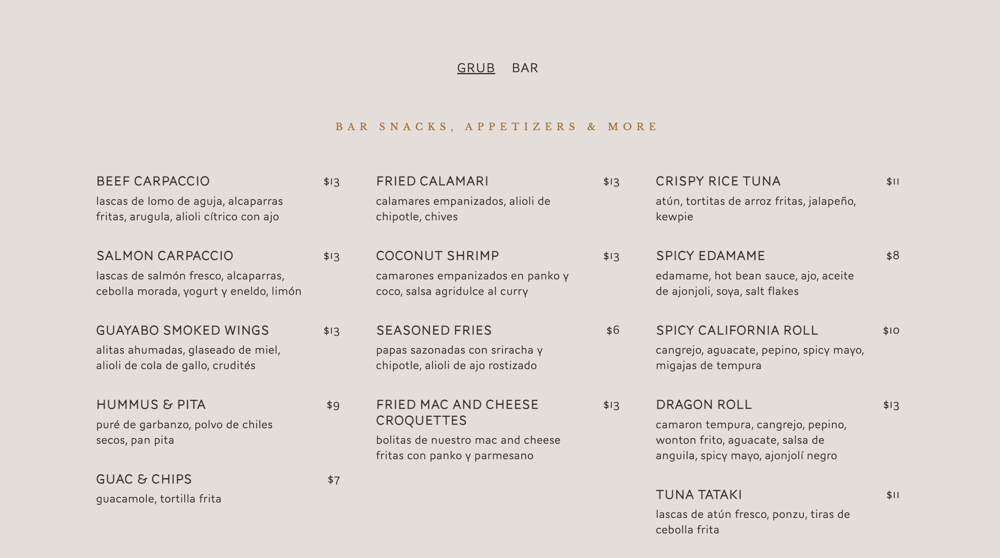
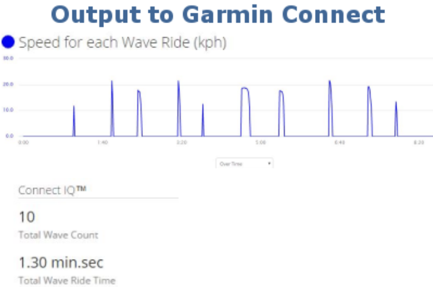
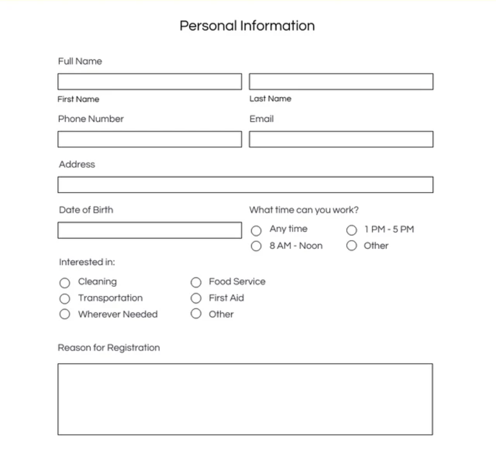

Personal Website & Digital CV
A multi-page responsive web project designed and built to showcase
my education, work history, and creative projects as part of my
WEB1 course[cite: 3].
Technologies: Semantic HTML5, External CSS3,
Flexbox, CSS Grid, GitHub Pages[cite: 3]
View Project

Cashablanca — Banknote Collection Manager
My first semester software project focused on domain modeling,
user activity mapping, and application design for organizing and
cataloging bill collections[cite: 4].
Technologies: Software Architecture, Domain
Modeling, UML, HTML/CSS[cite: 4]
View Project

Salvadorean restaurant Menu Page
A responsive single-page menu layout created for a restaurant in
San Salvador, organizing different dishes and traditional drinks
using semantic tags.
Technologies: HTML, CSS Flexbox
View Project

El Tunco Surf Tracker
A web-based table structure designed to track wave conditions and
upcoming local surf competitions at El Tunco beach in El Salvador.
Technologies: HTML, CSS
View Project

Coastal Cleanup Volunteer Form
An accessible frontend form interface designed to register
volunteers for weekend beach preservation and cleanup initiatives
across the Salvadoran coast.
Technologies: HTML Forms, CSS Grid
View Project